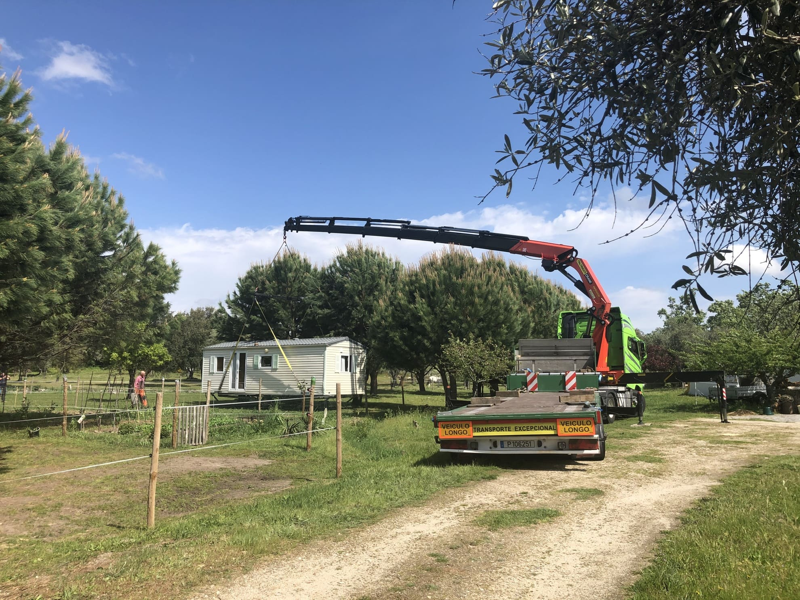
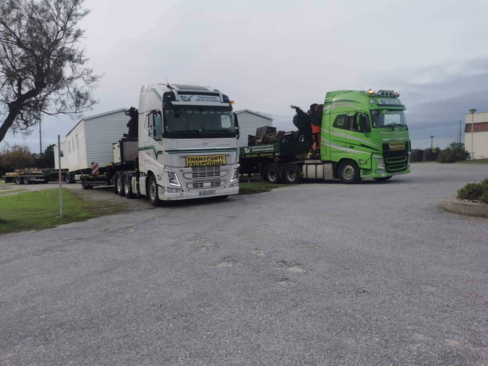

A sua carga.
O nosso
próximo destino.
Transportes, gruas e movimentação de equipamentos. O primeiro passo é perceber o que precisa de levar — e como chega até lá.
Encontre o serviço
Comece pela
sua necessidade.
De uma máquina a uma carga paletizada, encontre o ponto de partida para falar com a equipa.
Camiões com grua
Transportar e movimentar equipamentos no mesmo serviço.
02Porta-máquinas
Transporte de máquinas e transportes especiais.
03Plataforma elevatória
Apoio à carga e descarga de mercadoria paletizada.
04Semi-reboques
Transporte de mercadorias em território nacional e internacional.
05Viaturas ligeiras
Uma opção para o transporte de cargas de menor dimensão.
06Transportes diversos
Outras necessidades de transporte a analisar com a equipa.

O transporte
começa antes
da partida.
O que vai transportar, os acessos e os pontos de recolha e entrega ajudam a enquadrar cada pedido.
Partilhe a informação disponível. A equipa confirma o serviço e as condições adequadas à operação.
Preparar o contacto